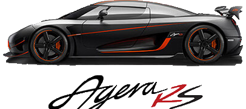
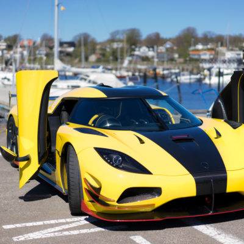

The new Agera RS pushes the boundaries and takes the Agera to all new levels of performance.
The new Koenigsegg Agera RS has its focus set firmly on the track but is still perfect for regular use on the road. It uses advanced technology developed during our exclusive Koenigsegg One:1 program, while maintaining all the functionality of previous S and R models. Such practicalities include a usable luggage compartment and a detachable hardtop that can be stowed internally for top-down motoring at any time.
Agera RS enhancements include: advanced lightweight sound insulation, an all-new front splitter optimized for the track, front winglets, side skirts, advanced dynamic underbody flap system and a dynamically active rear spoiler for added down force (now up to 450 kg at 250 km/h). The RS also features improved side air outlets behind the front wheels, increased power and a raised rpm limit.
Even with all this added functionality and equipment, we have still managed to lower the curb weight compared to the Agera S and R models, thanks to the use of advanced composites and layup techniques developed during the One:1 program.
On top of the standard equipment, the Agera RS also offers the option to choose the Koenigsegg active and self-levelling chassis package, 3G connected Pre-Active chassis setups, alternative aero packages, active sound cancellation and much more.
The engine – as with the previous Agera S – has been optimized for regular pump gas and now puts out an incredible 1160 bhp on regular petrol. That’s an astonishing 232 bhp per liter with perfect reliability.
In certain markets, the Agera RS can also be configured to run on E85 for even higher power levels, while the engine management system offers the ability to adjust on-the-fly to any fuel mix at any given time.
The Agera RS is the ultimate in road and track versatility. It offers the most extreme performance available today and yet is fully road legal, complying with safety standards and other necessary homologation requirements worldwide.
The RS will be handcrafted in only 25 examples, with 10 pre-sold prior to the first showing.

SPECIFICATION
AERODYNAMICS
Dynamically active rear wing
Active independent front flaps
Frontal area: 1.873 m²
Total down force at 250km/h 485 Kg
Active independent front flaps
Frontal area: 1.873 m²
Total down force at 250km/h 485 Kg
CHASSIS
Carbon fiber with aluminum honeycomb and integrated fuel tanks
Weight: 70 kg (including tanks)
Front and rear suspension – double
wishbones, carbon fiber rear upper wish-bones, two-way electronically adjustable gas-hydraulic shock absorbers, and pu-shrod operated Triplex damper in the rear Electronically adjustable ride height, fully independent per wheel
Weight: 70 kg (including tanks)
Front and rear suspension – double
wishbones, carbon fiber rear upper wish-bones, two-way electronically adjustable gas-hydraulic shock absorbers, and pu-shrod operated Triplex damper in the rear Electronically adjustable ride height, fully independent per wheel
ENGINE MANAGEMENT
Koenigsegg Engine Control Module and Flex fuel capacity (KECM)
High Power coil on plug ignition system
High Power coil on plug ignition system
TRANSMISSION
7-speed paddle-shift with auto shift mode
Koenigsegg Electronic differential (KED)
Koenigsegg Gearbox Control Module (KGCM)
Koenigsegg Electronic differential (KED)
Koenigsegg Gearbox Control Module (KGCM)
STEERING
Rack and pinion hydro-electric power assisted steering.
2.7 turn lock-to-lock
Turning circle: 11 metres
Turning circle: 11 metres
WHEELS
Koenigsegg Aircore™ Super light hollow carbon fibre wheels with centre locking
Front: 19” x 9.5”
Rear: 20” x 12.5”
Front: 19” x 9.5”
Rear: 20” x 12.5”
BRAKES
Front brakes – Ventilated ceramic discs
Ø397 mm, 40 mm wide 6-piston, Koenigsegg calipers Rear brakes – Ventilated ceramic discs
Ø380 mm, 34 mm wide 4-piston Koenigsegg calipers Power-assisted
Ø397 mm, 40 mm wide 6-piston, Koenigsegg calipers Rear brakes – Ventilated ceramic discs
Ø380 mm, 34 mm wide 4-piston Koenigsegg calipers Power-assisted
TIRES
Dedicated Michelin Pilot Sport Cup2 (or optional Michelin Supersport for everyday use)
Unidirectional with asymmetric thread pattern
Front: 265/35 – 19” (Y)
Rear: 345/30 – 20” (Y)
Unidirectional with asymmetric thread pattern
Front: 265/35 – 19” (Y)
Rear: 345/30 – 20” (Y)
DIMENSIONS
Total length: 4293 mm
Total width: 2050 mm
Total height: 1120 mm
Low speedground clearance: 105 mm
Track mode ground clearance: 85 mm
Front lifting system activated: 150 mm
Wheelbase: 2662 mm
Fuel capacity: 82 litres
Luggage compartment: 150 litres
Dry weight: 1295 kg (Curb weight: 1395 kg
Total width: 2050 mm
Total height: 1120 mm
Low speedground clearance: 105 mm
Track mode ground clearance: 85 mm
Front lifting system activated: 150 mm
Wheelbase: 2662 mm
Fuel capacity: 82 litres
Luggage compartment: 150 litres
Dry weight: 1295 kg (Curb weight: 1395 kg
ENGINE
Koenigsegg twin turbo aluminum 5,0L V8,
4 valves per cylinder, double overhead
camshafts, dry sump lubrication
Compression: 9.3:1
Bore: 92 mm Stroke: 95.25 mm
Sequential, multipoint fuel injection with dual knock sensors and back pressuresensors, closed loop wide band lambda control, twin ceramic ball bearing turbo chargers with Koenigsegg patented backpressure
reduction system with va-riable turbo geometry. 1.3 bar (1.4 with E85) boost pressure Dry sump lubrication. Carbon fiber intake manifold with optimised intake tracts Tig-welded ceramic coated 0.8 mm wall thickness inconel exhaust system mani- fold with merge collector
Total engine weight: 189 kg
Power output – gasoline – 865 kW (1160Hp)
at 7800 rpm – redline at 8250 rpm
Torque: 1000 Nm from 2700 to 6170 rpm
Max torque – 1280 Nm at 4100 rpm
1MW engine option available
4 valves per cylinder, double overhead
camshafts, dry sump lubrication
Compression: 9.3:1
Bore: 92 mm Stroke: 95.25 mm
Sequential, multipoint fuel injection with dual knock sensors and back pressuresensors, closed loop wide band lambda control, twin ceramic ball bearing turbo chargers with Koenigsegg patented backpressure
reduction system with va-riable turbo geometry. 1.3 bar (1.4 with E85) boost pressure Dry sump lubrication. Carbon fiber intake manifold with optimised intake tracts Tig-welded ceramic coated 0.8 mm wall thickness inconel exhaust system mani- fold with merge collector
Total engine weight: 189 kg
Power output – gasoline – 865 kW (1160Hp)
at 7800 rpm – redline at 8250 rpm
Torque: 1000 Nm from 2700 to 6170 rpm
Max torque – 1280 Nm at 4100 rpm
1MW engine option available
ELECTRONIC STABILITY SYSTEM
Koenigsegg Electronic Stability Control (KES) with 3 settings Wet – Normal – Track
TRACTION CONTROL
3 settings Wet – Normal – Track
BODY
Two-door, two seater with removable hardtop
Body made from pre-impregnated carbon fiber/kevlar and lightweight sandwich reinforcements
Body made from pre-impregnated carbon fiber/kevlar and lightweight sandwich reinforcements
EQUIPMENT
Dual airbags, detachable hardtop with lightweight roof, power windows, adjustable pedals and steering column, leather interior with Agera style stitching, bucket carbon sport seats with memory foam, carbon ceramic brakes with Sport ABS, KES (stability) , front/rear hydraulic lifting system, power steering, power brakes, Satnav, LifePo4 battery, MP3 player, USB connection, climate control, digital warning and info system, G sensor, alarm, tire monitoring system, Koenigsegg shield alarm fob, leather carpets, roof storage bag, car cover, Koenigsegg car charger.Specification subject to change.
GALLERY
